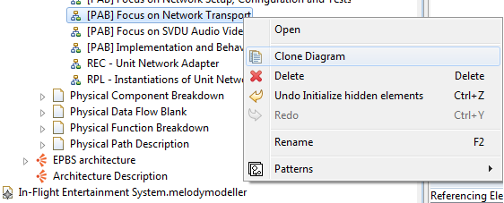
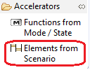
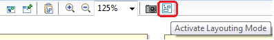
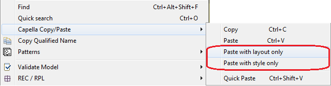

In order to ease the alternative architectures set up, a cloning diagram functionality exits in Capella. Directly in the Capella Project explorer, right click on the diagram you want to clone and select Clone Diagram . A new diagram is created next to the original one.

A diagram template can be set up and then applied to others diagrams in order to save time in diagram layout set up. It also ensures the layout consistency of diagrams.
Example:

Once all your elements are placed on your diagram, you can activate the Layout Mode in order to displace them but their allocation on other elements could not be modified.

You can Copy/Paste the layout and the style of elements to reuse them in another diagram containing the same elements:
It is also possible to Paste only the layout or only the style of elements by right clicking on the diagram, selecting Capella Copy/Paste and then Paste with layout only or Paste with style only

You can also Copy the layout/style from an upper phase (e.g. System Analysis) and paste to different model elements to a lower phase (e.g Logical Architecture), thanks to the Paste capability which tries to match with realizing elements.
Layout and style can also be copy-pasted using a different facility, which can be found in contextual menu "Edit" and in the toolbar at the top of the diagram editor
2 selection modes exist for both copy and paste: Global copy, Selection copy, global paste, paste on selection
Global copy
Layout of all elements on a diagram can be copied at once, either right-clicking the diagram's background > Edit > Copy format, or clicking "Copy the format of the whole diagram"
Copy based on selection
Format can be copied from a selection of elements, either right-clicking the selection > Edit > copy format, or clicking "Copy the format of the selected diagram elements"
Format data is associated with the semantic element, so that when pasting, any matching element in the target selection will have its format modified to the copied format.
Global paste
Format (both Style and Layout) can be pasted directly on a diagram, either right-clicking the diagram's background > Edit > Paste format, or clicking "Paste the current recorded format (layout and style) to the selected diagram"
However, if a semantic element is displayed multiple times, the paste might not be accurate, and may cause these multiple occurrences to be overlapped. To overcome this issue, we recommend to use multiple copy/paste on a fragmented selection instead (See examples)
Style or layout can also be pasted separately, using Edit > Paste Style , or Edit > Paste Layout
Paste on selection
Format can also be pasted on a selection of elements, either right-clicking the diagram's background > Edit > Paste format, or clicking "Paste the current recorded format (layout and style) to the selected elements"
As explained, a copy paste action may not properly work on a selection of elements that contains several times the same element. This may however be achieved by splitting your original copy paste action into multiple ones, so that the format of each occurrence is properly copy-pasted
Accelerators exist to ease this process, such as Capella Select > Related RPL elements, or Capella Select > Related REC elements They significantly help copy pasting between REC and RPLs, by copying the format of a REC and applying it to each RPL independently.
On top of the different types of selection, the Paste actions provides two coordinates modes : Absolute and Relative
Absolute mode
When pasting, the matching elements' new coordinates will be the same as the source coordinates
Optimized locations by group (Relative)
When pasting, the matching elements' new coordinates will be calculated to be relative to the target group of parents This lets you paste format in elements that are contained in other
You can align connectors between two components by selecting them (right-to-left selection) and use the "Straighten" tool:
"Arrange All" action correctly arranges automatically diagram elements.
{kind=link}
{kind=link}
{kind=link}
{kind=link}
{kind=link}
{kind=link}
{kind=link}
{kind=link}
{kind=link}
{kind=link}
{kind=link}
{kind=link}
{kind=link}
{kind=link}
{kind=link}